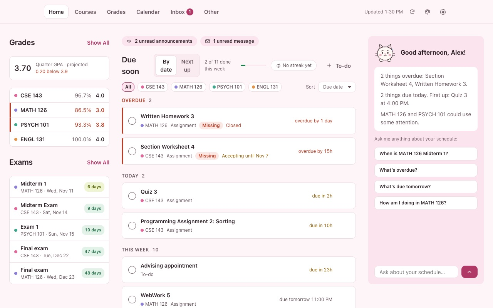
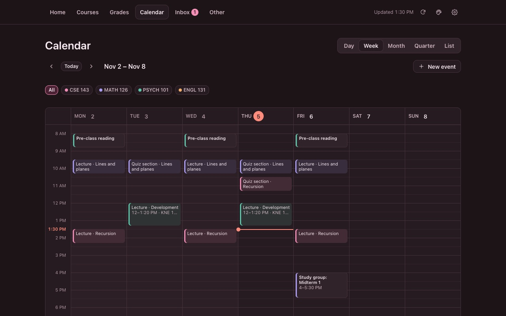
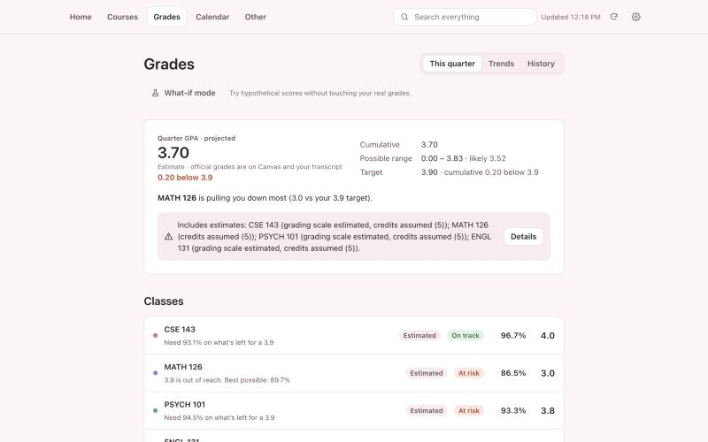

Neko
Everything due, your grades and your class schedule in one calm page. Works with Canvas, and everything stays on your computer.
Free Chrome extension. No account, no tracking. Not affiliated with Instructure or your school.



What it does
- One list of what's dueOverdue, today and the week ahead across all your classes.
- Grades and GPALetter or 4.0 grades, what you need on what's left, and what-if scores.
- A real calendarDay, week, month and term views with your class times and exams.
- Syllabus importBring in a PDF or Word syllabus. It's read on your computer, and you check every date before it's saved.
- MochiA friendly cat who answers questions like "what's due tomorrow?"
- Private by designNo account, no analytics, no server. Your data never leaves your browser.
Questions
Is it safe?
It runs entirely in your browser. It reads your classes from your school's Canvas using the login you already have. It never sees your password, never sends your data to us or anyone else, and has no server or analytics. The public version only reads from Canvas: it can't submit, post or change anything there.
Is it allowed?
It shows you your own information from Canvas, the same things you'd see on the Canvas website, using your own login. It doesn't get around anything your school or instructors have hidden. If your school has rules about browser extensions on its computers, those still apply.
Is it made by Canvas or my school?
No. Neko is an independent project that works with Canvas. It isn't affiliated with, endorsed by or sponsored by Instructure (the makers of Canvas) or any school. Always check Canvas for official deadlines and grades.
What data does it keep?
A copy of your courses, assignments, grades and announcements from Canvas, plus anything you add (notes, to-dos, syllabus dates, settings), stored in Chrome on your computer. You can back it up, restore it or delete it any time in Settings. Uninstalling the extension deletes it too. See the privacy policy.
Can I try it without Canvas?
Yes. On the first screen, choose "Try it with sample data" to explore with a made-up student.
Are the grades and GPA official?
No. They're estimates worked out on your computer from what Canvas shows and your syllabus. Your official grades are on Canvas and your transcript.